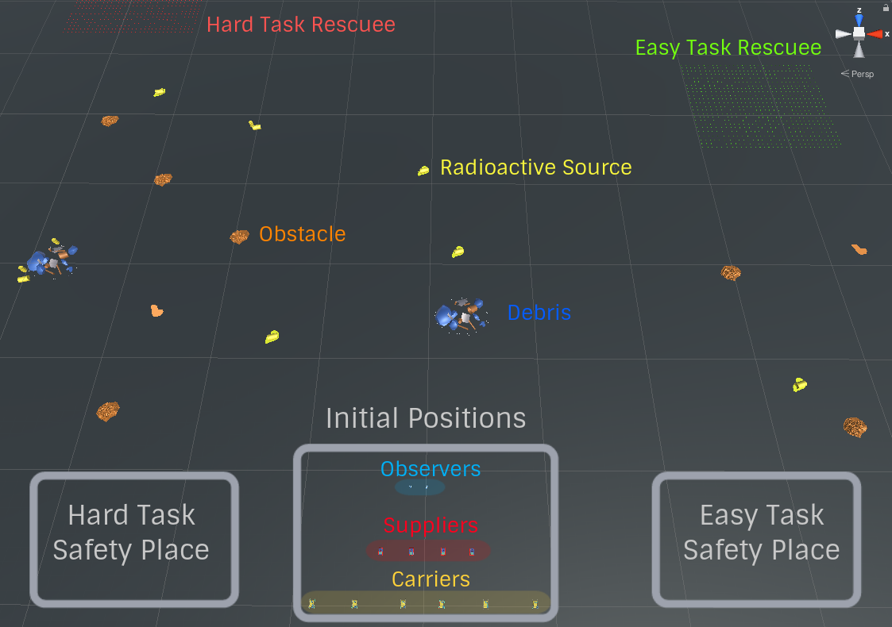
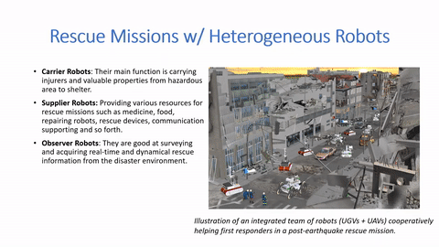
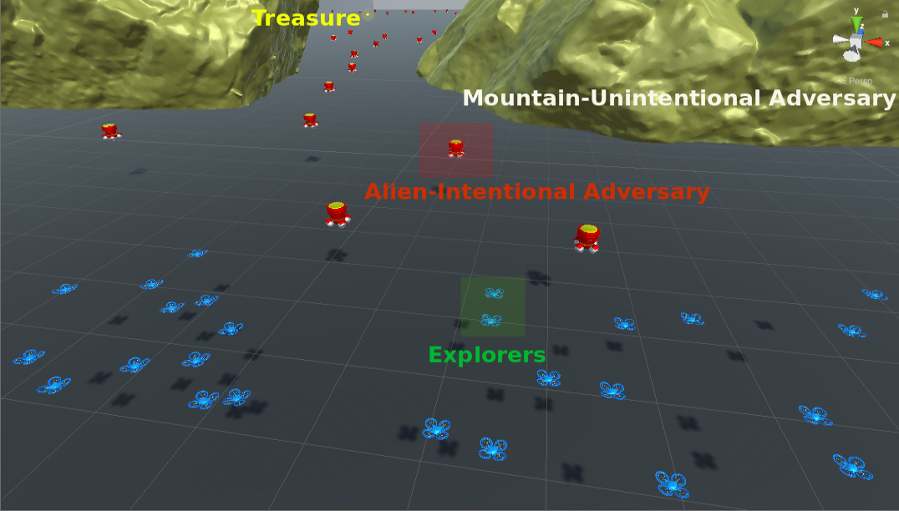
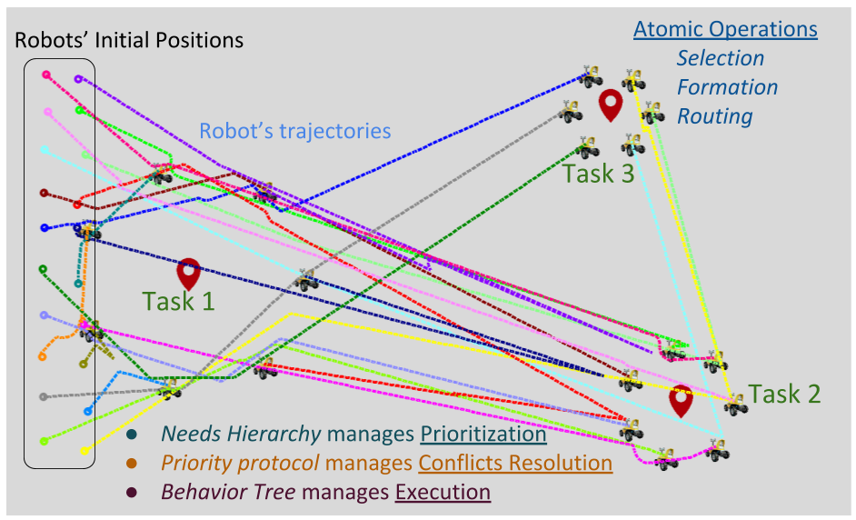

I am a researcher specializing in Robotics and AI. My research focuses on Multi-Agent/Robot Systems (MAS/MRS), Distributed Artificial Intelligence (DAI), Swarm Intelligence, Swarm Robotics, and Human-Robot Interaction (HRI). I strive to understand the relationships between entities and how we can simulate their interaction and apply to AI agents (like robots) in unknown and adversarial environments. These works concern the computational issues of distributed intelligent systems having a physical instantiation in the real world, such as multi-robot systems, wireless sensor networks, or software agents. It characterizes multiple entities that integrate perception, reasoning, decision, learning, and action to perform cooperative tasks under circumstances that are insufficiently known in adversarial status and dynamical change during task execution.
About Me
Latest Researches
Self-Adaptive Swarm System (SASS) -- The Novel DAI Architecture for Cooperative MAS/MRS
In the SASS, Agent Needs Hierarchy is the foundation. It surveys the system’s utility from individual needs. Balancing the rewards between agents and groups for MAS through interaction and adaptation in cooperation optimizes the global system’s utility and guarantees sustainable development for each group member, much like human society does.

Bayesian Strategy Network (BSN) based Soft Actor Critic in Deep Reinforcement Learning
Adopting reasonable strategies is challenging but crucial for an intelligent agent with limited resources working in hazardous, unstructured, and dynamic environments to improve the system utility, decrease the overall cost, and increase mission success probability. Deep Reinforcement Learning (DRL) helps organize agents' behaviors and actions based on their state and represents complex strategies (composition of actions). This research introduces a novel hierarchical strategy decomposition approach based on Bayesian chaining to separate an intricate policy into several simple sub-policies and organize their relationships as Bayesian strategy networks (BSN).

Game-theoretic Utility Tree for Multi-Robot Cooperative Pursuit Strategy
This work extends the Game-theoretic Utility Tree (GUT) in the pursuit domain to achieve multiagent cooperative decision-making in catching an evader. We demonstrate the GUT's performance in the real robot implementing the Robotarium platform compared to the conventional constant bearing (CB) and pure pursuit (PP) strategies.

How can robots trust each other for better cooperation? A relative needs entropy based robot-robot trust assessment model.
Cooperation in multi-agent and multi-robot systems can help agents build various formations, shapes, and patterns presenting corresponding functions and purposes adapting to different situations. Relationship between agents such as their spatial proximity and functional similarities could play a crucial role in cooperation between agents. Trust level between agents is an essential factor in evaluating their relationships' reliability and stability, much as people do.

Needs-driven Heterogeneous Multi-Robot Cooperation in Rescue Missions
In nature, from cell to human, all intelligent agents represent different kinds of hierarchical needs such as the low-level physiological needs (food and water) in microbe and animal; the high-level needs self-actualization (creative activities) in human being. Simultaneously, intelligent agents can cooperate or against each other based on their specific needs. As an artificial intelligence agent -- robot, to organize its behaviors and actions, we introduced the needs hierarchy of robots in to help MRS build cooperative strategies considering their individual and common needs.

A Game-Theoretic Utility Network for Cooperative Multi-Agent Decisions in Adversarial Environments
Natural systems have been the key inspirations in the design, study, and analysis of Multi-Agent Systems (MAS). Distributed Intelligence refers to systems of entities working together to reason, plan, solve problems, think abstractly, comprehend ideas and language, and learn. Especially for cooperative MAS, the individual is aware of other group members, and actively shares and integrates its needs, goals, actions, plans, and strategies to achieve a common goal and benefit the entire group. It can maximize global system utility and guarantee sustainable development for each group member. Considering working in adversarial environments, opponents can prevent MAS from achieving global and local tasks, even impair individual or system necessary capabilities or normal functions Combining multi-agent cooperative decision-making and robotics disciplines, researchers developed the Adversarial Robotics focusing on autonomous agents operating in adversarial environments.

Hierarchical Needs Based Self-Adaptive Framework For Cooperative Multi-Robot System
Natural systems (living beings) and artificial systems (robotic agents) are characterized by apparently complex behaviors that emerge as a result of often nonlinear spatiotemporal interactions among a large number of components at different levels of organization. Simple principles acting at the agent level can result in complex behavior at the global level in a swarm system. Swarm intelligence is the collective behavior of distributed and self-organized systems. Moreover, Multi-robot systems (MRS) potentially share the properties of swarm intelligence in practical applications such as search, rescue, mining, map construction, exploration.
Research Publications
A Hierarchical Game-Theoretic Decision-Making for Cooperative Multiagent Systems Under the Presence of Adversarial Agents Accepted
Yang, Q., In the AAAI-23 Bridge Session on Artificial Intelligence and Robotics.
A Hierarchical Game-Theoretic Decision-Making for Cooperative Multiagent Systems Under the Presence of Adversarial Agents Accepted
Yang, Q., & Parasuraman, R., In the 2023 ACM Symposium on Applied Computing (SAC) Intelligent Robotics and Multi-Agent Systems (IRMAS) Track.
A Strategy-Oriented Bayesian Soft Actor-Critic Model Accepted
Yang, Q., & Parasuraman, R., In the 14th International Conference on Ambient Systems, Networks and Technologies (ANT 2023).
A Game-theoretic Utility Network for Cooperative Multi-Agent Decisions in Adversarial Environments Published
Yang, Q., & Parasuraman, R., In 2022 IEEE/RSJ International Conference on Intelligent Robots and Systems (IROS) Decision Making in Multi-Agent Systems (DMMAS) Workshop.
Game-theoretic Utility Tree for Multi-Robot Cooperative Pursuit Strategy Published
Yang, Q., & Parasuraman, R., In IEEE the 54th international symposium on robotics (ISR Europe) 2022.
Self-Adaptive Swarm System (SASS) Published
Yang, Q., In Proceedings of the thirtieth international joint conference on artificial intelligence, IJCAI-21 (pp. 5040–5041). Doctoral Consortium.
How Can Robots Trust Each Other For Better Cooperation? A Relative Needs Entropy Based Robot-Robot Trust Assessment Model Published
Yang, Q., & Parasuraman, R., In 2021 IEEE International Conference on Systems, Man, and Cybernetics (SMC) (pp. 2656-2663).
Needs-driven Heterogeneous Multi-Robot Cooperation in Rescue Missions Published
Yang, Q., & Parasuraman, R., In 2020 IEEE International Symposium on Safety, Security, and Rescue Robotics (SSRR) (pp. 252-259).
Hierarchical Needs Based Self-Adaptive Framework For Cooperative Multi-Robot System Published
Yang, Q., & Parasuraman, R., In 2020 IEEE International Conference on Systems, Man, and Cybernetics (SMC) (pp. 2991-2998).
Self-Reactive Planning of Multi-Robots with Dynamic Task Assignments Published
Yang, Q., Luo, Z., Song, W., & Parasuraman, R., In IEEE 2019 International Symposium on Multi-Robot and Multi-Agent Systems (MRS) (pp. 89-91).
Work Experience
Research Scientist - Hitachi America, Ltd. (10/2022 - present)
Create new concepts, design algorithms, test scenarios, and validation strategies, perform experiments, and analyze data to design and improve connected and automated driving systems.
Research & Teaching Assistant/Instructor - Computer Science Department in University of Georgia (01/2019 - 09/2022)
Researched, designed, and developed new algorithms and software architectures with provable properties in Multi-Agent Systems (MAS) and Multi-Robot Systems (MRS). Performed a literature review of research that led to fundamental new concepts which could be simulated in AI agents or demonstrated on real robots and sensor networks. Graded various computer science courses. Served as an instructor for Introduce MatLab Programming, Introduce Robotics, Discrete Math, etc.
Teaching Assistant - Computer Science Department in Colorado School of Mines (08/2017 - 12/2018)
Graded various computer science courses inclduing Discrete Mathematics, Database Management, Computer Simulation, Computer Graphics, Introduction to the Linux Operating System, etc.
Assistant Research Engineer - Robotics and Artificial Intelligence Laboratory in The Chinese University of Hong Kong - Shenzhen (06/2017 - 08/2017)
Built a flow field sensor recognizing the direction and pressure of various environments to help auto-jalor selecting proper route.